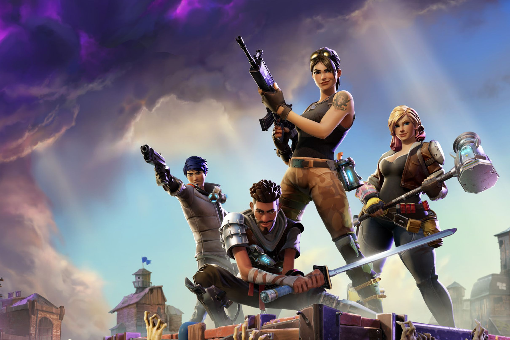

Fortnite Battle Royale is a free-to-play battle royale video game developed and published by Epic Games. It is a companion game to Fortnite: Save the World, a cooperative survival game with construction elements. It was initially released in early access on September 26, 2017, for Windows, macOS, PlayStation 4, and Xbox One, followed by ports for iOS,[c] Android,[c] and Nintendo Switch the following year. Epic dropped the early access label for the game on June 29, 2020. Versions for the PlayStation 5 and Xbox Series X/S were released as launch titles in late 2020. The concept of the game is similar to previous games of the genre: 100 players skydive onto an island and scavenge for gear to defend themselves from other players. Players can fight alone, or with up to three other players. As the match progresses, the playable area within the island gradually constricts, giving the players less and less room to work with; outside this safe zone is "the Storm", which inflicts damage on those caught inside it, with the amount of damage growing as the Storm itself does. The last player or team alive wins the match. The main distinction from others in the genre is the game's construction elements, letting players build walls, obstacles, and other structures from collected resources to take cover from incoming fire or give one a strategic view advantage. Battle Royale uses a seasonal approach with battle passes to introduce new character customization content in the game, as well as limited-time events, some of which correspond with changes to the game map. Since its initial release, several other game modes have been introduced, including "Battle Lab" and "Party Royale". The idea for Battle Royale arose following the release of PlayerUnknown's Battlegrounds in 2017, a similar battle royale game that was highly successful but noted for its technical flaws. Originally released as part of the early access version of Save the World, Epic later transitioned the game to a free-to-play model funded by microtransactions. Following its rise in popularity, Epic split the development team, with one focusing on Battle Royale and the other on Save the World. Battle Royale received positive reviews from critics, who praised its learning curve, gameplay, art style, multiplayer and progression system, but noted its similarity to previous games in the genre. The game quickly rose in popularity following its release, eventually surpassing Battlegrounds in overall player count and revenue. Player count had exceeded 350 million by May 2020. The game has gone on to become a cultural phenomenon, with promotion through social media and several celebrities, such as Ninja, Marshmello, and Drake, contributing to the game's popularity, achieving record-high viewership on streaming platforms in the process.
The EPIC GAMES Launcher is a game launcher(as the name suggests), and launches a variety of games that follow a lot of genres.
